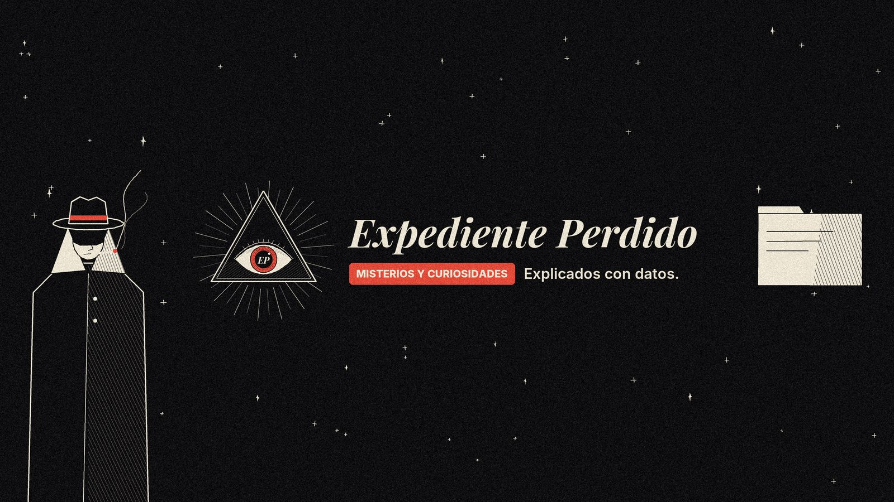

Misterios reales. Explicados con datos.
Expediente Perdido
Casos que nadie ha sabido cerrar, rincones de la Tierra que parecen de otro planeta y preguntas sobre el universo que todavía no tienen respuesta.
Expediente Perdido es un canal de YouTube en castellano que investiga misterios reales y curiosidades de la ciencia y la historia, y los revisa con lo único que no miente: los datos.
Hechos comprobadosCada dato, fecha y cifra se verifica con fuentes, que se citan en la descripción de cada vídeo.
Teorías puntuadasSeparamos lo comprobado de la especulación y puntuamos cada explicación según las pruebas.
Animación propiaVídeos animados en estilo «Tinta y Grano», dibujados a mano por ordenador.